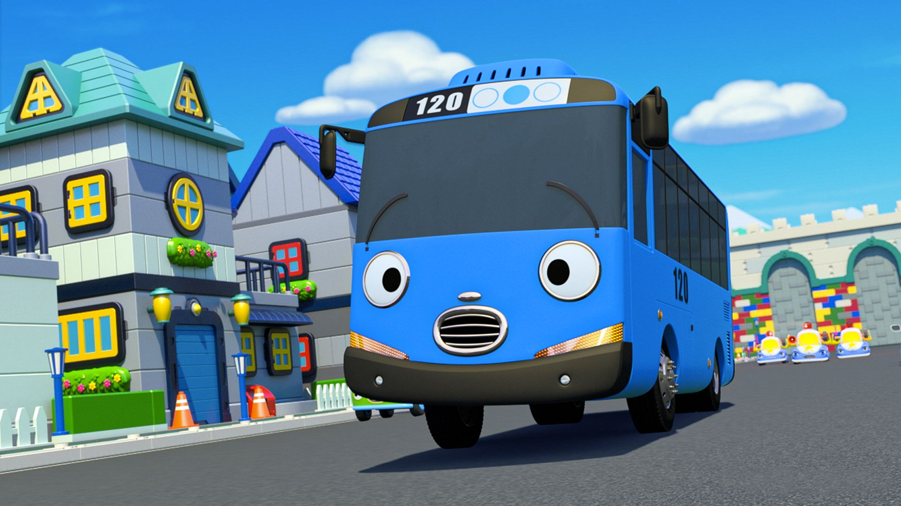

어린이 애니
- 뽀로로
- 타요
- 둘리
- 폴리

서울 간선버스가 모델이다.모티브는 자일대우버스 BS 1세대 후기형 + 현대 뉴 슈퍼 에어로시티 F/L. 성격은 기본적으로 착하지만 이따금 사고를 치기도 한다.
'어른이 되고 싶어요' 편에서는 어른이 되고 싶다는 소원을 빌다가 꼬마버스들을 위해 온갖 힘든 일을 하게 되었고, '타요가 작아졌어요' 편에서는 하나가 만지지 말라고 했던 기계를 만지다가 장난감 정도의 크기로 작아져 루키의 조카네 집에까지 끌려갔다.
그래도 기본적인 바탕은 착한데
대부분의 평범한 어린이들을 모티브로 캐릭터의 성격을 잡은 것으로 보인다.
'둘이 된 타요' 편에서는 가짜 타요인 별타요 때문에 오해받는 악몽을 꾸었고, '시골에 간 타요' 편에서는 시골로 운행을 나왔다가 된통 고생하기도 했다.
'타요가 경찰이 됐어요' 편에서는 경찰 체험을 하는 도중 스피드를 구해 루키와 패트에게 칭찬받았다.
배기 가스를 잘 뿜는다.
친구들에게 자신의 방귀 연주를 선보이기도 하고, 어떨 때는 승객들에게 친근하게 다가가기 위해 배기 가스를 뿜기도 한다. 연료 충전을 할 때도 배기 가스를 뿜는데,
'새 친구 가니' 편에서는 가니에게 연료 충전하는 법을 알려주다가 가니에게 배기 가스를 뿜었다(...). 현재는 잘 뿜지 않는 편.